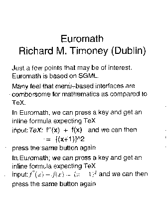
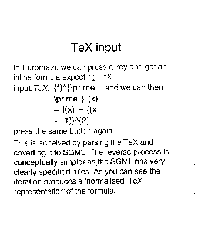
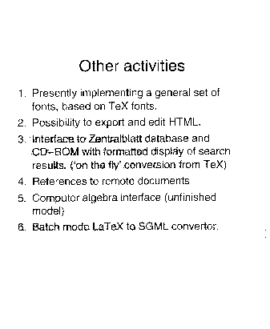

R. Timoney: Progress Report from Euromath
Slides presented at OpenMath Workshop 4 by Richard Timoney.

(full size, 14k)
(original, 35k)

(full size, 11k)
(original, 29k)

(full size, 10k)
(original, 37k)
This page is part of the OpenMath Web archive,
and is no longer kept up to date.